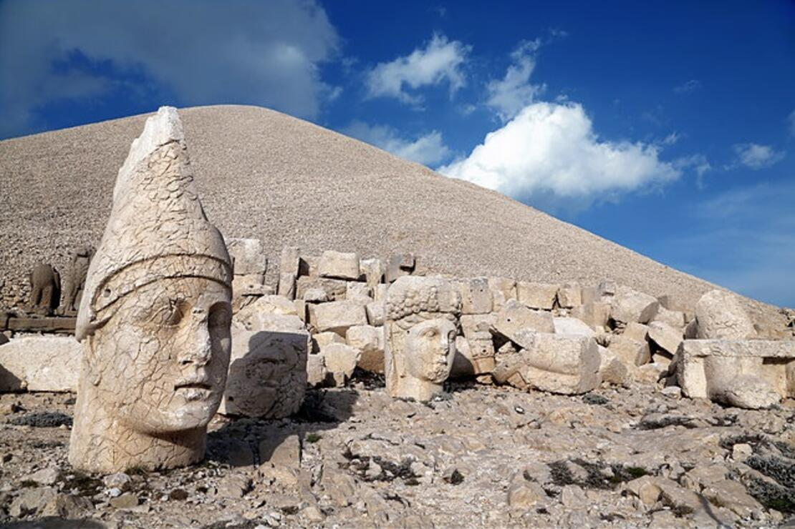

| ANASAYFA | İLETİŞİM | YAPIM | HAKKIMIZDA |
| NEMRUT DAĞI/ADIYAMAN |
|  |
Dağ, eski çağlarda "Kommagene" olarak bilinen, bu alanda bulunan arkeolojik kalıntılara ev sahipliği yapmaktadır. Antiochos tümülüsü ve buradaki dev heykeller, Eskikale, Yenikale, Karakuş Tepe ve Cendere Köprüsü millî park içinde kalan kültürel değerlerdir.[1] Doğu ve batı teraslarında Antiochos ile tanrı-tanrıça heykellerinin yanı sıra aslan ve kartal heykelleri bulunmaktadır. Batı terasında eşsiz bir aslanlı horoskop yer almaktadır.Aslanın üzerinde 16 ışından oluşan 3 adet yıldız vardır ve bunlar Mars, Merkür ve Jüpiter gezegenlerini temsil etmekte olduğu sanılmaktadır.Tarihte bilinen en eski horoskoptur.[2]
Heykeller Helenistik, Pers sanatı ve Kommagene ülkesinin özgün sanatı harmanlanarak yontulmuştur. Bu anlamda Nemrut Dağı'na "batı ve doğu uygarlığının köprüsü" denebilir.[3]
Kommagene kralı Antiochos Theos, MÖ 62 yılında bu dağın tepesine, pek çok Yunan ve Pers tanrısının heykelinin yanı sıra kendi mezar-tapınağını da yaptırmıştır. Mezarda, bir kartalın başı gibi, tanrıların taş oymaları bulunur. Heykellerin diziliş şekli hiyerotesyon olarak bilinir.
Mezarda 1881 yılında Alman mühendis Karl Sester tarafından kazı çalışmaları yapılmıştır. Daha sonraki yıllarda yapılan kazılarda da Antiochus'un mezarı bulunamamıştır. 1987'de UNESCO tarafından Dünya Mirası ilan edilen Nemrut Dağı, 1988 yılında tesis edilen Nemrut Dağı Millî Parkı ile korumaya alınmıştır.[3]